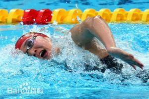
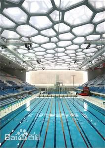
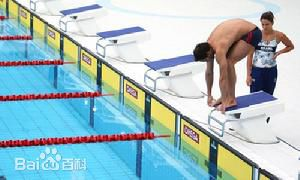
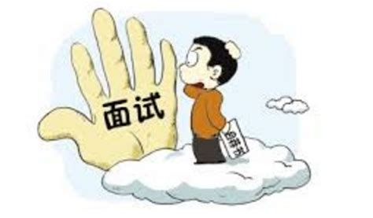

自由泳
自由泳（freestyle）是竞技游泳比赛项目之一。严格的来说不是一种游泳姿势，它的竞赛规则几乎没有任何的限制，爬泳这种姿势结构合理，阻力小，速度均匀、快速，是最省力的一种游泳姿势。所以人们也把爬泳称为自由泳。1896年第一届奥运会自由泳被列为正式的比赛项目。20世纪50年代以前，游泳运动员都非常重视两腿打水的作用，一般都是两臂轮流划水1次就打腿6次。后来科研材料证明打腿的能量消耗比划臂大得多，而推动身体前进的动力主要来自臂部的划水动作。因此以臂为主的现代自由泳技术重视臂的划水动作和两臂的配合。
19世纪初，澳大利亚人R·卡维尔用两腿交替打水，取代剪夹水技术取得胜利。 [1] 1922年美国人韦斯摩洛改进用两臂交替划水和两腿6次交替打水配合，形成现代爬泳模式。 1896年第一届奥运会自由泳被列为正式的比赛项目，自由泳不受任何姿势的限制，爬泳的速度最快，也是自由泳唯一的姿势，这种姿势结构合理，阻力小，速度均匀，是最省力的一种游泳姿势。 自由泳实用性强，在奥运会游泳比赛中占有很重要的地位。奥运会自由泳项目男子有50米、100米、200米、400米、1500米、4×100米接力、4×200米接力7项；女子有50米、100米、200米、400米、800米、4×100米接力6项。自由泳项目在全部游泳项目31项中占13项，而且混合泳和混合泳接力中也包括自由泳，因此自由泳往往被看作是衡量一个国家游泳水平的标志。
参赛资格
参加奥运会的各协会必须是由国际奥委会认可的协会。各协会所派参赛运动员需参加由国际泳联及国际奥委会举行的资格赛并获得参赛资格。 在奥运会的每个单项比赛中，由国际泳联确定报名成绩。参赛资格分为A、B两个标准，其中B标的成绩相对容易达到。如果一个国家或协会在每个项目中都派一名选手参赛，这些选手必须要达到奥运会B标。如果有两名选手参加同一单项的比赛，他们的成绩必须达到奥运会A标。只有在国际泳联认可的比赛中达到A标，选手的奥运会报名才有效。 单项比赛：在每个单项比赛中，每个国家最多可以派两名达到奥运会A标成绩的选手参加；如果达到奥运会B标，则只能派一名运动员参赛。 接力比赛：每个接力项目中，每个国家只能派出一支队伍参赛。 没有达标选手的国家：当一个国家无一人达奥运会A标或B标时，可按照参赛资格说明，派出男、女各一名选手参赛。
注意事项
奥运会自由泳比赛中，200米以下个人项目（含200米）进行预赛、半决赛和决赛；400米以上个人和接力项目进行预赛和决赛。运动员和接力队根据报名成绩分组进行预赛，根据预赛成绩排名进入半决赛或决赛。 出发和到边在奥运会游泳比赛中，任何一个运动员在出发时抢跳犯规都会被取消比赛资格。自由泳、蛙泳、蝶泳及个人混合泳的各项比赛必须从出发台起跳出发，仰泳项目在水中出发。当总裁判员发出长哨音信号后，运动员应站到出发台上（仰泳项目运动员下水，在总裁判员发出第二声长哨时迅速游回池端，在水中做好出发准备），当发令员发出“各就位”的口令后，运动员应至少有一只脚在出发台的前缘做好出发准备，手臂位置不限。当所有运动员都处于静止状态时，发令员发出“出发信号”（鸣枪、电笛、鸣哨或口令）。运动员在听到“出发信号”后才能做出发动作。在自由泳和仰泳比赛中，到达终点时运动员可以只用一只手触壁，而在蛙泳和蝶泳比赛中，必须双手同时触壁。 转身奥运会游泳比赛使用的是50米长的标准池，所有距离在50米以上的比赛都必须在途中折返。转身时，自由泳和仰泳允许运动员使用身体的任何部分触及池壁，这就允许运动员可以在水下转身后，用脚去蹬池壁。转身的一个例外规则就是在个人混合泳当中，从仰泳转换泳姿到蛙泳时，运动员必须保持仰泳的姿势直到触及池壁。 计时所有游泳运动员的比赛成绩和名次都是由自动计时装置决定的。运动员出发时，出发台上的压力板将记录数据。每条泳道两端都装有触板，当运动员触壁时也会被记录。由于触板和出发台是互连的，因此可以判断参加接力比赛的运动员是否是在其队友触壁以后才入水的。接力比赛当中，如果任何一个运动员在其队友触壁0.03秒之前离开出发台，这个队将被自动取消比赛资格。（运动员可以在队友触壁的时候做出发动作，但是脚必须接触出发台。
经常有泳友讨论，为什么自由泳的时候，游几十米之后，胳膊就酸痛无力了。其实就是因为发力点弄错了。这里首先要告诉你，自由泳的划臂真的不是靠手部力量的，否则的话，游1000米还不累死你？你想啊，身体全部的重量，如果仅仅靠手和胳膊来带动，肯定会给胳膊施加太多的压力，酸痛也是自然的了。 自由泳手部的技巧主要有 ： 1.入水要轻：像去触摸前方的东西 ，一个容易碰碎的东西。 2.抱水要对准水：就是手掌心要向后（这个是关键。千万不要掌心向下），因为想要前进，肯定是要向后划水，而不是向下压水。很多初学者都容易犯错。正确的手部姿态，如下图 3.推水要推倒底：即大腿附近的位置 ，还有一个加速度推水的要求。 4.移臂要提肘：这个不好练，可以假装用手去摸耳朵，或者类似敬礼的动作，再不理解就是说女孩子去拉连衣裙边上的拉链再顺势到耳朵边，动作差不多就对了。如图 再就是抱水时，手指要并拢。 大家一起来看上面这个图，初步的观察一下动作的要领和关键点。 可以看到，划水主要靠肩部运动发力，背部肌肉带动肩膀转动，肩膀再带动胳膊和手腕，手和臂肌肉的收缩主要是起固定对水的手型和臂型（高肘曲腕），并不用来产生主要的前进动力。推水阶段主要是肱三头肌和手腕的瞬间发力。 很多初学者在游自由泳的时候觉得手臂容易疲劳，原因就是划臂动作不规范导致的，你要明白游泳是一个全身性的运动，几乎都是靠大肌群带动小肌群的， 仅靠手臂力量推动全身向前是不靠谱的。自由泳的臂都是靠背部力量拉的，胳膊就像两个船桨一样，只负责接触水，而背阔肌才是发动机，是真正的动力来源。所以好的自由泳运动员背部肌肉都是比较发达的。 这里就要求你慢慢体会背部力量带动手臂划水的动作，再一个就是要多练了，总之，抱水划水推水对手臂肌肉的压力并不大。还是技术动作的问题。自由泳不是手的动作，也不是手臂动作，请格外注意，是后背肌肉群的动作，附加腰腹的力量。肩膀一定要转动起来，这样才能调动全身的力量，去前进。 另外一个关键点，划水的路线问题。一般来讲，无非是C形,S形，直线形。初学阶段，建议使用C形划水，一来可以增大划水路径，二来更容易配合转动肩膀。同时，划水也是有节奏快慢的。手刚入水时，可以比较轻柔的划水抱水，不要用蛮力，产生的效果也是很好的。当手臂划到胸部肋骨附近时，转动手腕，向大腿方向，划水，同时配合转髋，转肩，背阔肌发力，迅速拉着胳膊向后推水，产生强劲的动力。这样的划水方式还可以辅助你更好做身体侧倾的动作，如此才是最有效率的自由泳划水动作。 只要你掌握了先慢后快充分转肩的原则， 既保护了你的肩又提高了抱水效果。 刚开始练习的时候， 要做到水面上充分的转肩及轻松的移臂， 手入水后 不发力向下慢抱水 这样做的好处是把手上的气泡甩开， 抱水效果好，即使用很少的力你也会有一个持续的前进的动力， 而且不会伤肩膀。 水下直臂时， 肩膀也是充分的伸展， 划臂路线加长， 这就是事半功倍 ，当手臂垂直于身体正下方在向后方推水时要比抱水速度稍快即可。 另外，一个完整的划水动作之后，身体会前进一段距离，要找好节奏，及时进行下一次划水动作，不要让身体过度滑行，那样的话，就相当于造成了暂停。相当于开车的时候，踩一脚油门，踩一脚刹车，不仅开不快，还伤害发动机。 要一直保持身体处于前进状态，这样，划水的时候就会很轻松了。 接下来，我们就去实践练起来吧！
比赛分类
常见的自由泳比赛有8种，分别是： 50米自由泳、100米自由泳、200米自由泳、400米自由泳、800米自由泳、1500米自由泳、4×100米自由泳接力、4×200米自由泳接力。 少年游泳比赛（8岁以下）还常有25米的自由泳。这个距离比较适合耐力低的少年选手。 包括自由泳部分的混合泳项目有： 100米个人混合泳、200米个人混合泳、400米个人混合泳、4×100米混合泳接力。 国际游泳联合会举办的800米竞赛只有女子，1500米竞赛只有男子。但是，联合会记录其它比赛的女子1500米和男子800米。
打腿对于自由泳的重要性不言而喻。打腿是身体的平衡控制器和推进器（当然手是自由泳最大的推进器）。腿一停，身体就斜，阻力就大，所以自由泳整个运动过程都是手脚不停的，很多人觉得自由泳比蛙泳累也是因为这个原因。 先来了解三种自由泳打腿效果： 1）从髋关节发力有助于你的踢腿，而不是仅仅从膝下。 2）把你的腿保持几乎是的直，而不是松散的。过度弯曲你的膝盖太多会让你很累，效率低下。 3）最后发力点在脚踝。这是更为直接的，并帮助您快速游泳。 先抓墙完善你的腿。在泳池边用双手把你的脸埋在水中。开始踢，保持你的脚在水的表面。你应该踢得放松点，然后有白色水花。打的大小和腿的速度按照你的感觉走。 拿浮板打腿。双手持板在泳池里上下打腿。你可以保持你的头在水上或在水下。如果你保持抬头，你将需要踢得更努力并保持你的腿在水的表面。你也可以练习流线型打腿的自由泳或仰泳，或使用短鳍将帮助建立耐力，并教你使用短，快的打腿方式。练习不同打腿的方法将帮助你开发你的腿部肌肉和习惯。 我们复习下完整腿： 直腿。 从髋关节。 和脚踝一个点。 脚在表面，打出水花。 总结归纳以下： 1、腰髋的发力控制腿部踢水让身体转动减阻就力，让身体去运动，这就是踢水技术的目的！ 2、打腿技术的好坏决定身体流线型保持的质量，身体流线型的好坏决定平衡掌控的质量，而对流线型、平衡的掌控决定转动技术的质量！ 3、对身体流线型、平衡技术的掌控质量（即减阻质量）决定转动即动力链的流畅--即就力质量！
场地设施
比赛场地 国际标准游泳池长50米，宽至少25米，深2米以上。设8条泳道，每条泳道宽2.50米，第一和第八泳道的外侧分道线距离池壁为2.50米。 [4] 分道线 分道线长度应和赛道长度一致，固定在凹进两端池壁的挂钩上。挂钩的位置应该保证分道线两端的浮标能够浮在水面上。分道线浮标直径0.05～0.15米。 [4] 计时装置 游泳比赛中主要通过自动计时系统来记录每位运动员的成绩、确定运动员的名次。自动计时系统包括发令装置、触板和计时器3部分组成。奥运会和世界锦标赛中，自动计时系统还应该包括大型电子显示屏和终点录像系统。 1）发令装置包括话筒和电笛（如果使用发令枪，必须带换能器）。发令装置与各出发台的扬声器相连，以便使每位运动员都能同时听到发令员的口令和出发信号。 2）触板的尺寸应不小于2.4米宽、0.9米高，厚度0.01米±0.002米。应安装在泳道两端中心的固定位置上，运动员在每次转身或到达终点时接触触板即可记录比赛成绩或分段成绩。 3）计时器应安装在距离游泳池终点端3～5米处装有空调的控制室内，控制室面积不小于6米×3米。在比赛期间，控制室与游泳池间的视线不能受到阻碍。 4）按照规则要求游泳比赛计时器应精确到1/100秒。除记录和处理运动员比赛成绩外还能够自动记录运动员游进趟次，以及在接力比赛中判断运动员是否交接棒犯规。 5）大型电子显示屏在比赛过程中将显示运动员的比赛成绩，名次以及其它信息。电子显示屏应至少可显示10行，每行显示32个字符，每个字符的位置上均能显示字母和数字。 出发台 6）在奥运会和世界锦标赛中，终点录像系统将作为自动计时系统的一部分来记取运动员比赛成绩。在其它赛事中，需要配备半自动计时装置作为补充。半自动计时装置要求每条泳道有3名裁判员独立操作按钮与计时器相连接的按钮，在运动员到达终点时，裁判员按下按钮来记取运动员成绩。
常见的自由泳比赛有8种，分别是： 50米自由泳、100米自由泳、200米自由泳、400米自由泳、800米自由泳、1500米自由泳、4×100米自由泳接力、4×200米自由泳接力。 少年游泳比赛（8岁以下）还常有25米的自由泳。这个距离比较适合耐力低的少年选手。 包括自由泳部分的混合泳项目有： 100米个人混合泳、200米个人混合泳、400米个人混合泳、4×100米混合泳接力。 国际游泳联合会举办的800米竞赛只有女子，1500米竞赛只有男子。但是，联合会记录其它比赛的女子1500米和男子800米。 打腿对于自由泳的重要性不言而喻。打腿是身体的平衡控制器和推进器（当然手是自由泳最大的推进器）。腿一停，身体就斜，阻力就大，所以自由泳整个运动过程都是手脚不停的，很多人觉得自由泳比蛙泳累也是因为这个原因。 先来了解三种自由泳打腿效果： 1）从髋关节发力有助于你的踢腿，而不是仅仅从膝下。 2）把你的腿保持几乎是的直，而不是松散的。过度弯曲你的膝盖太多会让你很累，效率低下。 3）最后发力点在脚踝。这是更为直接的，并帮助您快速游泳。 先抓墙完善你的腿。在泳池边用双手把你的脸埋在水中。开始踢，保持你的脚在水的表面。你应该踢得放松点，然后有白色水花。打的大小和腿的速度按照你的感觉走。尽量保持你的脚在水的表面；如果你的脚完全离开了水，你就是抬得过高。如果你的脚完全淹没，那就是你的臀部和腿太低。 拿浮板打腿。双手持板在泳池里上下打腿。你可以保持你的头在水上或在水下。如果你保持抬头，你将需要踢得更努力并保持你的腿在水的表面。你也可以练习流线型打腿的自由泳或仰泳，或使用短鳍将帮助建立耐力，并教你使用短，快的打腿方式。练习不同打腿的方法将帮助你开发你的腿部肌肉和习惯。 我们复习下完整腿： 直腿。 从髋关节。 和脚踝一个点。 脚在表面，打出水花。 总结归纳以下： 1、腰髋的发力控制腿部踢水让身体转动减阻就力，让身体去运动，这就是踢水技术的目的！ 2、打腿技术的好坏决定身体流线型保持的质量，身体流线型的好坏决定平衡掌控的质量，而对流线型、平衡的掌控决定转动技术的质量！ 3、对身体流线型、平衡技术的掌控质量（即减阻质量）决定转动即动力链的流畅--即就力质量！
动作技术
自由泳的基本技术特点是，人体俯卧水中，头肩稍高于水面，游进时躯干绕身体纵轴适当左右滚动，两臂轮流划水推动身体前进。手入水后划水路线呈S形，呼吸与划水动作协调。当臂用力划水时，利用水流在头两侧形成的波谷吸气。 自由泳，其动作结构比较合理、省力、阻力小，是当前速度最快的一种游泳姿势。 具体解释来说即是：在自由泳整套动作中，腿部动作除了推进力，也起平衡作用，保持身体的稳定和协调双臂做有力地划水，双臂划水可分为前交叉、中交叉和后交叉
自由泳腿部动作虽有一定的推进力，但主要起平衡作用，保持身体的稳定和协调双臂做有力地划水。要求两腿自然并拢，脚稍内旋，踝关节关松，以髋关节为轴，由大腿带动小腿和脚掌，两腿交替做鞭打动作，两脚尖上下最大幅度约30~40厘米，膝关节最大屈度约160゜。
自由泳是臂部动作是推动身体前进的主要动力。以一个周期分为入水、抱水、划水、出水和空中移臂五个不可分割的阶段。 1． 入水：完成空中移臂后，手在控制下自然放松入水。手的入水点一般在身体纵轴和肩关节的前后延长线之间。入水时手指自然伸直并拢， 臂内旋使肘关节抬高处于最高点，手掌斜向外下方，使手指首先触水，然后是小臂，最后是大臂自然插入水中。 2． 抱水：臂入水后，在积极向下方插入的过程中，手掌从向斜外下方转向斜内后方并开始屈腕、屈肘，肘高于手，以便能迅速过渡到较好的划水位置。抱水结束，手掌已经接近对水，肘关节屈至150゜左右，整个手臂像抱着一个大圆球似的为划水作准备。 3． 划水：划水是发挥最大推进作用的主要阶段，其动作过程可分为拉水和推水两个部分。紧接抱水阶段进入拉水，这时要保持抬肘，并使大臂内旋。同时继续屈肘，使手的动作迅速赶上身体的前进速度，能使水动作造成合理的动作方向呼路线，同时，也使主要肌肉群在良好的工作条件下进入推水动作，拉水至肩的垂直平面后，即进入推水部分，这时肘的屈度约100゜左右。大臂在保持内旋姿势，带动小臂，用力向后推水。同时，使肩部后移，以加长有效的划水路线。向后推水有一个从屈臂到伸臂的加速过程，手掌从内向上， 从下向上的动作路线加速划至大腿旁。整个划水动作，手的轨迹始于肩前，继之到腹下，最后到大腿旁，呈s形。 4． 出水：划水结束时，掌心转向大腿，出水时小指向上，手臂放松，微屈肘。由上臂带动，肘部向外上方提拉带前臂和手出水面，掌心转向后上方。出水动作必须迅速而不停顿，同时应该柔和、放松。 5． 空中移臂：紧接出水不停顿地进入空中移臂，移臂时，肘高于手。 6． 两臂配合：自由泳时两臂划水发生的交叉位置有前交叉、中交叉和后交叉三种类型。前交叉是指一臂入水时，另一臂已前摆至肩前方与平面成30゜左右。前交叉有利于初学者掌握自由泳动作和呼吸。中交叉是指一臂入水时，另一臂处在向内划水阶段与水平面成90゜。 后交叉是指一臂入水时，另一臂划至腹下，手与水平面成150゜左右。 臂腿呼吸配合 在自由泳时，一般是在两臂各划水一次的过程中进行一次呼吸，以向右边吸气为例：右手入水后，嘴和鼻开始慢慢呼气。右臂划水至肩下，开始向右侧转头和增大呼气量。右臂推水即将结束，则用力呼气。右臂出水时，张嘴吸气，至空中移臂的前半部为止，并开始转头还原。然后，直至臂入水结束，有一个短暂的闭气过程，脸部转向前下。头部稳定时，右臂入水，再开始下一慢慢呼气的过程。 自由泳的呼吸与臂、腿配合，初学者一般者采6：2：1的方法，即呼吸一次、臂划两次、腿打6次，这种配合方法易保持平衡和协调掌握自由泳技术。
我们泳友都知道游自由泳时，身体不做到超直的话，会增加前进时的阻力，前进的能量较大部分都用来对抗水的阻力，所以速度受到了限制。 但当你在游自由泳的时候，如果能将下半身（髋、腿、脚掌）尽量贴近水面，就能被评定为有效率的泳姿，也就是大家眼中“游得不错”的程度。 上面两幅图片一个脚沉在下面是错的，一副身体超直是准确的。怎么样让脚浮起来。让下半身尽量贴近水面的方法很多，有人说“手指向四点钟方向”、“努力打腿，不然就会沉下去。”其实这些都是治标而不治本的方法。 如何才可以从根本上改进这些问题呢？首先要理解自由泳的前进的原理，你就会慢慢理解自由泳一些基本动作的逻辑脉络，再照着这些基本动作练习，慢慢就能够进步了。 自由泳的推进力，上半身占大部分，那打腿呢？很多人进行自由泳训练，看起来感觉像是在利用打腿前进，奋力的打腿，反而手臂划水只是起辅助作用，这样的自由泳游起来会非常累。这里小编有一个方法，可以尝试夹板划手练习，如果你夹板划手游进的速度要比你整体配合游进的速度快，那么请总结一下你的打腿技术吧！ 效率高的自由泳，推进力来自上半身（身体转动及手部的动作）。但打腿在自由泳当中仍然扮演一个重要的角色，打腿姿势不佳、动作不正确，比方说：锄头脚、剪刀脚……等等，都会使下半身下沉，所以“打腿”要恰如其分，过与不及都不行。 过度的滑行与延伸 其实游泳的学习是有程度上的区别，有些基本动作会在你还是初学者的期间做练习，但是当你进阶了，有些练习的等级及难度也会不一样。举例来说，当你对自由泳一无所知的时候，会指导你体会手的入水、延伸的重要性，但当你越来越进阶了，还有其他更进阶的动作要学。如果还过度着重在入水、延伸姿势上，认为利用这样的滑行就能带来速度，实际上当你在滑行的时候因为推进力的接续不顺畅，推进力不足的状况下，下半身也会较沉。 水下动作 上面提到，当你初学自由泳的时候，注意力或许放在入水与延伸，但进阶了之后，高肘抱水就很重要。水面下如果手臂是直臂向后划，一样导致推进力不足，下半身会较沉。高肘抱水可以使你有较好的前进效率，利用这样的动作及身体的转动，打腿也能跟着省力。
自由泳时身体俯卧保持良好流线姿势，当速度快时肩背浮出水面，两肩配合 划水交替滚动，两腿交替打水。手臂动作是爬泳主要动力来源，手入水后勾手提肘以高肘姿势在躯干反复转动配合下沿身体下面成S形曲线向后划水，两手相继出水后经空中向前摆臂，形成一个连贯的加速过程。高肘加速划水是现代技术特征之一。换气是生理需要，对完整配合结构有一定影响，尤其是在高频率快速冲剌阶段。故在速度快时为了减少因换气动作对完整节奏的影响，多采用缩小换气动作时间或减少次数的方法进行。 速度快时，多用6次腿、2次臂和1次换气进行完整配合；中等速度时可用4次腿、2次臂、1次换气。由于自由泳游速快，出发要求起动快、前冲有力、滑行短并尽快浮出水面，故多用爬台式平拍入水技术。而转身可用身体任何部分触壁，为了赢得距离和转速，多采用前滚翻转身技术。 自由泳项目在比赛中占比重最大，因而成为实力的标志。自由泳技术正朝向实效发展，要求高体位、高肘加速后划为主，减少换气次数，动作连贯，节奏稳定合理。